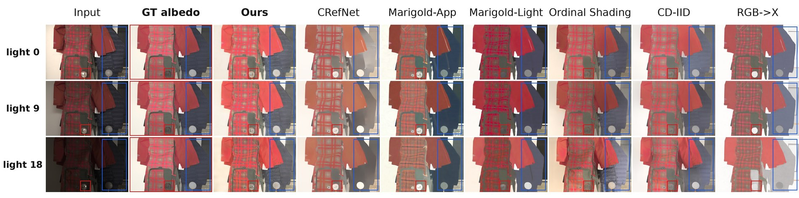
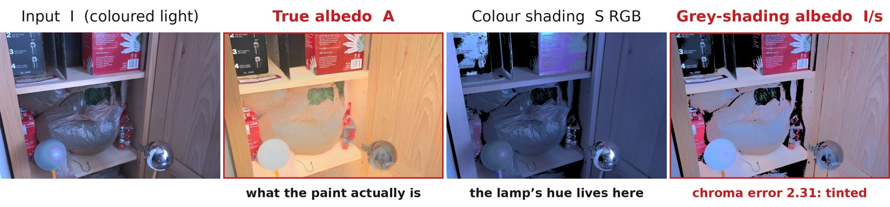
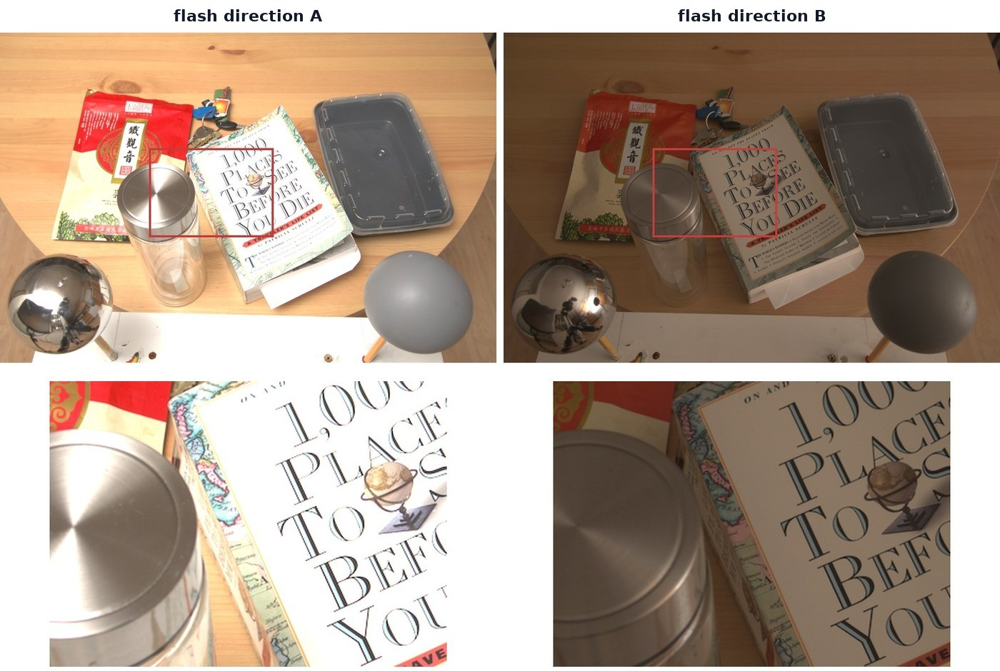
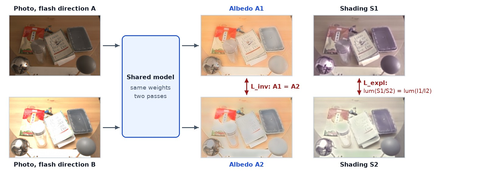

Cross-Illumination Albedo Invariance Lightness-stable intrinsic decomposition from real multi-illumination photographs
Abstract
Intrinsic image decomposition splits a photograph into the reflectance of each surface, the albedo, and the light falling on it, the shading. A single image cannot tell a dark surface from a dimly lit one, so the light leaks into the recovered albedo: the same wall comes out lighter or darker, and sometimes tinted, depending on how the room was lit.
We train with Cross-Illumination Albedo Invariance (CIAI). Two photographs of one scene under different illumination pass through the same network; their albedos must agree, and the shading must explain the brightness change between them. The idea borrows from Siamese representation learning and from multi-view consistency in 3D reconstruction. No dataset has real photographs under several lights and dense true albedo, so we use the Multi-Illumination Dataset, 25 flash directions per scene, with the pseudo-ground-truth albedo that MIDIntrinsics derives for all of them. Pairing is needed only in training; inference is one image, one pass.
In matched ablations CIAI cuts the variation of recovered material lightness across lighting by 28–39%, and on synthetic renderings fed with their original coloured light it also lowers the albedo error by 7–14%, on a benchmark it never trained on. The model trains 18.5M parameters. It does not make the albedo stable in colour: MID's flashes are white, so its illuminant colour barely changes, and our explanation loss sees luminance only. We measure that limit directly and lay out the model, losses and data meant to close it.
- A paired training strategy for lightness stability. Albedo invariance plus a luminance explanation loss on raw MID pairs, used as a fine-tuning stage on top of supervised synthetic training. Matched ablations isolate its effect on stability, and on accuracy where the input carries its lighting.
- A measured account of where it stops. MID varies light direction and intensity, not colour (median chromaticity gap 0.030). CIAI barely changes hue drift, which still tracks illuminant colour; two follow-up studies show why.
- Separating two failure modes the base model mixed up. The desaturated albedo of the frozen-encoder baseline is a model problem, not a CIAI side effect: a colour path fixes it with CIAI on or off.
- An evaluation that reports stability next to accuracy. Stability on MID, accuracy on measured albedo (MAW), because a grey albedo is perfectly stable.
Same scene, three flash directions, seven methods
Before the method or the numbers: this is what "the albedo shouldn't change when the light does" looks like in practice, and where each model gets it wrong.

Held-out MID scene, three flash directions, all seven methods. Two fixed regions are tracked across every panel, a mirror sphere (red) and a dark jacket (blue), so any change between panels is the model's, not the camera's.
Try it yourself
Pick a model and see its predicted albedo next to the photograph it came from, then step through four held-out scenes. Every prediction is a real checkpoint output.
One photograph cannot tell the surface from the light
Write a photograph as material times shading, I = A ⊙ Sd + R. From one image, a grey wall in shadow and a dark wall in full light are the same pixels, and a white wall under a warm lamp looks like a warm wall under white light. Whatever the model cannot attribute to the light ends up in the albedo.

Why the shading needs colour channels. Dividing an image by even the correct luminance of its shading leaves the light's tint in the albedo. Our model therefore predicts three-channel shading, but representing colour is not the same as being trained to put it there, which is the gap this project ends up measuring.
A second photograph of the same scene under different light breaks the tie: the surfaces are the same in both, so anything that changed between them is lighting. This is the intuition behind Siamese and contrastive learning (two views of one thing should share a representation) and behind multi-view consistency in 3D reconstruction (one surface seen several times has one property). CIAI keeps only the positive pairs: there are no negatives, just a dense target that the two albedos must share.

The supervision signal. Same camera, same objects, the flash bounced in a different direction. The Multi-Illumination Dataset (MID) captures every scene 25 times this way; MIDIntrinsics provides one pseudo-ground-truth albedo shared by all 25 frames.
Cross-Illumination Albedo Invariance
The base model is a frozen DINOv2-L encoder with a DPT decoder and two heads: albedo, and three-channel shading; a residual R = (I − A ⊙ Sd)+ absorbs highlights. It is first trained with supervised losses on Hypersim and InteriorVerse. CIAI is then added as a second stage on MID pairs.

CIAI applies at training time only. Thumbnails are the model's own outputs: the two albedos agree closely in lightness but less in colour, which is exactly what the results below measure.
The pairs are loaded without per-frame white balance, and the supervised anchors on synthetic data keep the agreed albedo tied to a true colour; agreement alone would also be satisfied by a wrong albedo shared by both frames.
The DINOv2-L backbone (304M parameters) stays frozen throughout and is not counted as trained.
Stability next to accuracy
A grey, constant albedo is perfectly stable, so a stability score means nothing on its own. We report it next to accuracy, measured on the same frames where possible.
| Model | Cmat ↓ | Castrel ↓ | MID chroma err ↓ | MAW ΔE ↓ |
|---|---|---|---|---|
| Ours | 0.157[.141–.174] | 0.425[.360–.491] | 0.129[.109–.150] | 4.16 |
| CD-IID | 0.190[.172–.210] | 0.306[.262–.355] | 0.090[.073–.110] | 3.37reported |
| RGB→X | 0.128[.115–.141] | 0.338[.273–.409] | 0.203[.170–.239] | – |
| CRefNet | 0.151[.138–.164] | 0.355[.309–.406] | 0.201[.165–.241] | 3.97 |
| Marigold-App | 0.193[.173–.214] | 0.355[.309–.406] | 0.195[.152–.245] | 3.78 |
| Marigold-Light | 0.546[.462–.645] | 0.392[.333–.459] | 0.154[.124–.187] | 4.21 |
| Ordinal Shading | 0.252[.229–.279] | 0.549[.463–.637] | 0.148[.130–.166] | 6.88 |
MID held-out split, 30 scenes, raw input, one harness for every method; brackets are 95% bootstrap intervals over scenes. MAW is evaluated locally with the official scorer except CD-IID, whose value is the one reported in its paper.
What the ablation isolates
A 2×2 study toggles the CIAI losses and a colour path (an RGB skip into the albedo head plus a chroma loss on albedo), from one shared checkpoint with matched data and steps.
- CIAI drives lightness stability. Cmat drops from 0.250 to 0.180 with the colour path off and from 0.259 to 0.157 with it on (−28% and −39%). Hue drift improves only slightly (Castrel −6% and −4%).
- It also makes the albedo more accurate where the input carries its lighting. On ARAP renderings with their original coloured light, CIAI lowers albedo LMSE by 14% and 7% and RMSE by 14% and 8% in the two matched pairs; on the same scenes white-balanced, the change is small. ARAP was never in training. These ARAP numbers use a provisional evaluation mask (below), shared by all rows, so the matched differences are more reliable than the absolute values.
- The colour path, not CIAI, decides colour fidelity. Without it the model keeps about half of the pseudo-GT chroma spread whether CIAI is on (0.48) or off (0.51); with it, 0.93–1.00. The washed-out albedo was the frozen-encoder baseline's problem.
- A lesson about metrics. Our first draft scored hue stability with a chroma variance pooled over all materials. That number also contains the scene's own colour diversity, computed from the prediction, so it ranked the washed-out configuration best. Splitting it into drift and spread reversed the ranking; the pooled score is no longer used.
ARAP results were computed with a mask that breaks on ARAP's mixed ground-truth encodings; they are marked provisional and will be regenerated. Qualitative images on this page were rendered with a later checkpoint of the same model and will be refreshed with the reported one.
Colour is the part CIAI does not learn
If a model's hue drift comes from the illuminant colour, it should grow on scenes where the illuminant colour changes more. Splitting the 30 test scenes into thirds by their measured illuminant gap and dividing the hue drift of the top third by that of the bottom third gives a direct test. 1.0 means drift does not follow illuminant colour.
| Model | Drift ratio, high / low gap | Shading |
|---|---|---|
| Ours | 1.43 | RGB |
| CRefNet | 1.42 | grey |
| Ordinal Shading | 1.56 | grey |
| Marigold-Light | 1.14 | RGB |
| Marigold-App | 1.03 | RGB |
| CD-IID | 1.02 | grey + chroma stage |
| RGB→X | 0.90 | RGB |
Our model's drift follows illuminant colour as much as CRefNet's, whose grey shading cannot represent a coloured light at all. MID's whole colour range is narrow, so this is a low-powered test, but both follow-up studies point the same way:
- A chroma explanation loss on the current shading. Colour drift falls 3.5%, but the model's own colour falls 2.9%, so relative drift does not move. Trained with synthetic coloured pairs, the same loss desaturates the albedo (chroma spread −0.10).
- Synthetic coloured pairs. Continuing training with rendered 3D-Front pairs improves measured colour on MAW (ΔE 4.18 → 4.04) and makes the model almost perfectly invariant on the renders (validation gap 0.0013), yet hue drift on real photographs is unchanged (0.415 → 0.418). Our first render also never showed a subtle colour change: its weakest pairs are stronger than MID's median.
From lightness to colour
- Prove the strategy, not the decoder. Train with and without CIAI on a CNN (U-Net), a fine-tuned ViT (DPT on DINOv2) and a single-step fine-tuned diffusion model (Marigold-IID), same data and steps, three seeds each.
- Model: luminance and chroma shading. Predict I = A ⊙ (Slum · C) + R with a unit-luminance chroma map C, in the spirit of CD-IID's separate colour stage. The albedo head sees the illuminant-corrected image I / (Slum · C) instead of raw RGB, so material colour gets through and illuminant colour has to be explained by C.
- Losses. Keep Linv and the luminance explanation; add a chroma explanation on C, applied only to pairs whose measured illuminant gap is large enough to carry signal; supervise C directly wherever ground truth exists.
- Data. Coloured-light pairs with exact factors from a second 3D-Front render that spans subtle to strong colour changes, and real coloured-illuminant pairs (e.g. LSMI, which photographs each scene under several illuminant combinations with per-pixel illuminant chromaticity).
- Evaluation. Hue drift on genuinely colour-varying real data, next to MAW; ARAP regenerated with corrected masks.
Citation
@misc{tran2026ciai, title = {Cross-Illumination Albedo Invariance: Lightness-Stable Intrinsic Decomposition from Real Multi-Illumination Photographs}, author = {Tran, Minh Khang}, year = {2026}, note = {Project report, revised from the author's MSc thesis (Erasmus Mundus Joint Master in Computational Colour and Spectral Imaging, NTNU)}, url = {https://github.com/tmkhang1999/CIAI} }